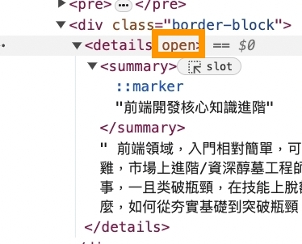

1-1-4 現代 HTML5 特色
什麼是HTML5？ HTML5就是HTML的第五次修訂的版本，由W3C在2014年10月完成標準訂定。 廣義上來說，HTML5 是指包含了 HTML、CSS 和 JavaScript的一套技術組合
HTML 標準是 W3C與 WHATWG 共同合作產出的，HTML5也是。 HTML5 給開發者提供了更多便利，簡單列舉如下。
- 用於繪畫的 canvas 元素。
- 用於媒介播放的 video 和 audio 元素。
- 對本機離線儲存有更好的支援（localStorage、sessionStorage）。
- 新的語義化標籤（article、footer、header、nav、section 等）。
- 新的表單控制項（calendar、date、time、email、url、search 等）。
除了以上正常功能，HTML5 還可實現以下功能，透過一些範例來說明。
1.給中文字加拼音
HTML5 可以用於給中文字加拼音，範例程式如下，執行效果如下所示。
<ruby>
前端開發核心知識進階
<rt>
gianduankaifahexinzhishijinjie
</rt>
</ruby>
2.展開和收起元件
代碼
<details>
<summary>前端開發核心知識進階</summary>
前端領域，入門相對簡單，可是想要「更上一層樓」卻雞上加雞，市場上進階/資深醇墓工程師鳳毛麟角。這當然未必完全是壞事，一且类破瓶頸，在技能上脫額而出．便是更廣隊的空間。那麼，如何從夯實基礎到突破瓶頸？
</details>
效果
前端開發核心知識進階
前端領域，入門相對簡單，可是想要「更上一層樓」卻雞上加雞，市場上進階/資深醇墓工程師鳳毛麟角。這當然未必完全是壞事，一且类破瓶頸，在技能上脫額而出．便是更廣隊的空間。那麼，如何從夯實基礎到突破瓶頸？標籤的打開時，開啟主控台可以看到 details 多了 open 標記

以往要實現這樣的效果，我們必須依靠 JavaScript。現在來看，HTML 也愛得更加具有可互動性。
3.原生進度指示器和度量
我們可以使用原生 progress 標籤顯示進度指示器
代碼
<progress></progress>
<progress value="22" max="100"></progress>
效果
未來趨勢：Web components
事實上，Web components的概念在幾年前就已經被提出了，但似乎一直沒有發展得「如火如茶」，那麼這裡為什麼要單獨拿出來講呢？ 作為「更高階」的前端工程師，要時刻保持技術視野的廣度。在架構帶來的「元件化」、「生命週期化」這些統治等級的概念下，Web components 取長補短並帶有「原生」優勢。下面歸納一下 Web components的優點。
原生標準，無須使用架構
這個優點的後半句話是「但是繼承且具備了架構的優點」。新的 Web components 標準中新增了元件生命週期、slot、範本等概念（可以與JSX或 Vue template 類比），這些概念與本來就已經存在的元件化、shadow dom、擴充原生元素的能力相結合，使 Web components 具備了較好的發展前景。
原生使用，無須進行編譯
想想現有的一系列架糖：無論是 Vue 還是 React ，都需要進行編譯、而此 Web components 是原生工具，會獲得瀏覽器的天然支援，可以免去編譯建置過程：
真正的CSS scope Webcomponents 實現了真正的 CSS scope ，做到了樣式隔離。真正的CSS scope 對於專案的可維護性非常重要。
行動版 HTML5 注意事項
這裡列舉一些典型情況
1.打電話 /發簡訊/寫郵件的小技巧
這些技巧都和 a 標籤相關，我們可以透過以下程式實現點選連結後撥打指定電話的功能。
<a href="tel:110">打電話給警察局</a>
實現發簡訊功能的程式如下。
<a href="sms:110">發簡訊給警察局</a>
透過以下程式可以實現寫郵件功能，實現此功能需要依賴"mailto"。
<a href="mailto: 110@govn.com">發郵件給警察局</a>
透過以下設定可以在發送郵件時增加副本。
<a href="mailto: 110@govn.com">發郵件給警察局，並副本給我爸爸</a>
除了副本，也可以進行私密發送，程式如下。
<a href="mailto: 110@govn.com?cc=baba@family.com&bcc=mama@family.com">發郵件給警察局，副本給我爸爸，並密送給我媽媽</a>
同理，也可以透過以下程式實現群發。
<a href="mailto: 110@govn.com;120@govn.com">發郵件給警察局，以及120急救中心</a>
既然能支援群發，那麼定義主題和內容也可以，程式如下。
<a href="mailto:110@gorn.com?sudbject=S0S">發郵件給警察局，並增加救命主題</a>
除了自訂主題，還可以用 body 這個 query 來實現自訂郵件內容。
內容也支援插入圖片和連結。
<a href="mailto: 110@gorn.com?:subject=SOS&body=快來救我">發郵件給警察局，並增加救命主題和內容</a>
2. 行動端產生300ms 點擊延遲及點擊穿透現象
這是由於歷史原因造成的，一般解決方法為禁止混用 touch 和 click，或增加一層「透明」蒙層，也可以透過延遲上層元素消失來實現。
3. 點擊元素時禁止產生背景或邊框
在行動端的某些裝置上，點擊按鈕後會出現醜陋的邊框，對於這種情況，我們一般可以使用以下程式，對預設樣式進行禁用。
-webkit-tap-highlight-color:rgba (0,0,0,0);
4. 長按連結與圖片時禁止出現選單
在行動端的某些裝置上，長按連結或圖片會預設出現選單，我們一般可以定 用以下程式來禁止這一預設行為。
-webkit-touch-callout: none;
5. 禁止使用者選取文字
-webkit-user-select:none;
user-select: none;
6.取消輸入英文時預設字首大寫
在某些版本的系統中，使用者輪入英文時，會預設字首大寫，我們可以透過以下程式來關閉這種設定(在iOS 下生效)。
<input autocapitalize="off" autocorrect="off" />
7.語音和視訊自動播放
自動播放是一個很麻煩的話題。不同瀏覽器的核心支援自動播放的情況不一樣，甚至WebKit 核心對於自動播放的策略也一直在調整中。自動播放有時候也帶著條件，如設定靜音等。 一般，我們設定自動播放的回復策略是使用者觸控式螢幕時進行播放，相關程式如下。
// Javascript 綁定自動播放（操作window時，播放音樂）
$(window).on('touchstart', () => {
video.play()
}
)
//微信環境
document.addEventListener("WeixinJSBridgeReady",()=>{
video.play()
}, false)
8.視訊全螢幕播放
為了使視訊全螢幕播放，我們一般進行以下設定。
<video
style="width: 100%"
x-webkit-airplay="true"
webkit-playsinline="true"
preload="auto"
autoplay
controls
src="https://interactive-examples.mdn.mozilla.net/media/cc0-videos/flower.webm">
</video>
但是，最後情況會受到瀏覽器引擎實現所影響。
9.開啟硬體加速
在做動畫時，為了達到更好的效能效果，我們常常會開啟硬體加速，一般會進行以下設定。
transform: translate3d (0,0,0);
10.fixed 定位問題
fixed 定位問題主要表現在：iOS端，舉例來說，在軟鍵盤出現的某些情況下，fixed 元素定位會受到影響；在配合使用 transform translate 的某些情況下，fixed 元素定位也會受到影響。這個問題的一般解決方案是模擬 fixed 定位一或使用 iScroll 函數庫。
11.讓 Chrome 支援小於12px 的文字
一般會透過以下程式使 Chrome 支援小於 12px 的文字。
-webkit-text-size-adjust:none;